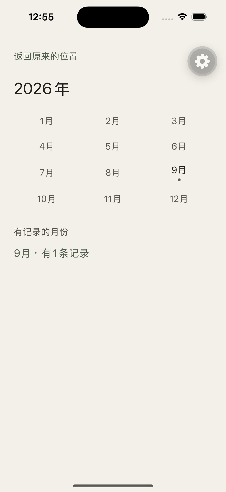
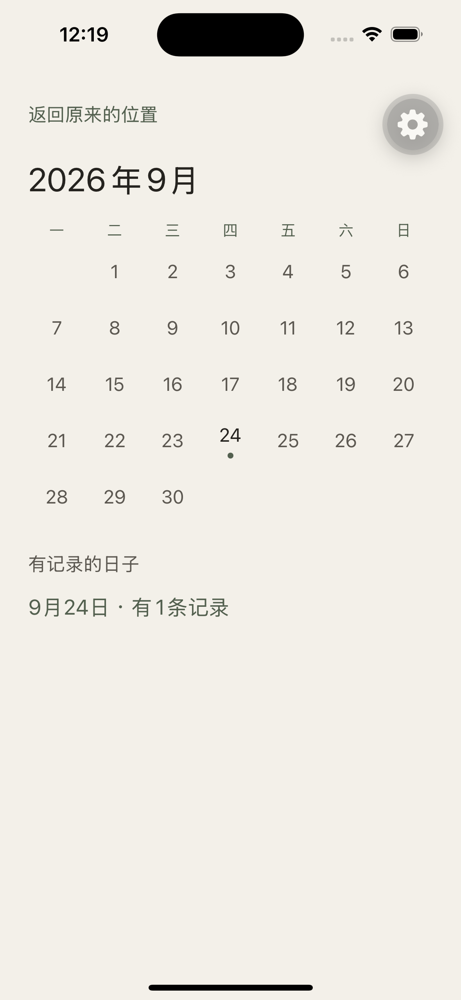
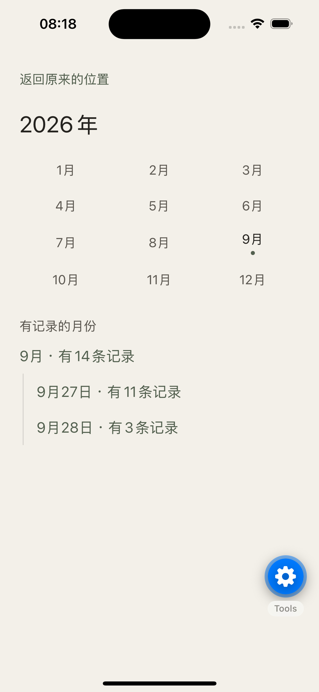
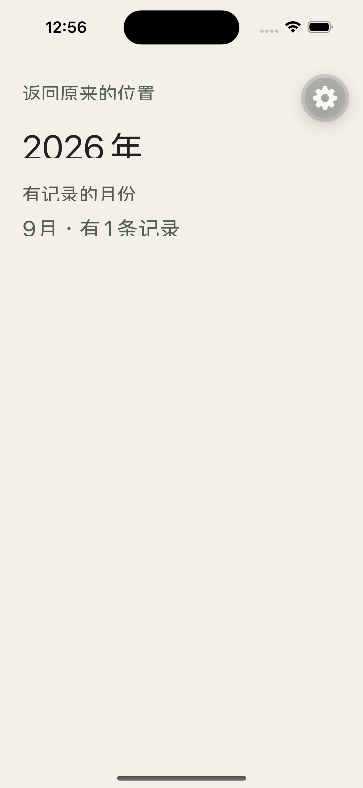
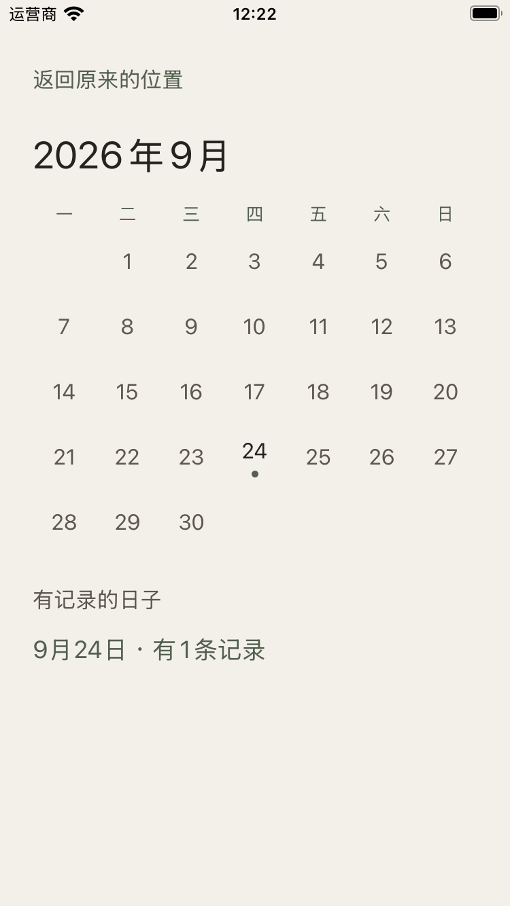
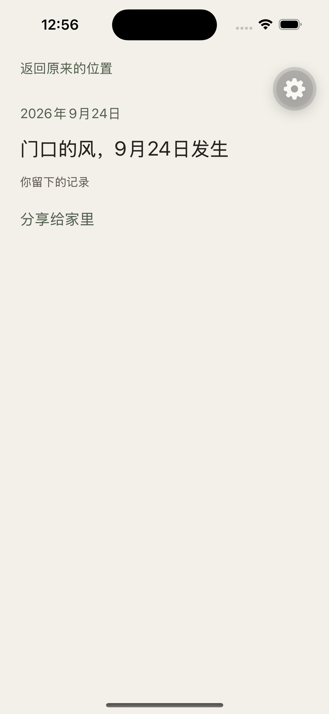

回看 · 三个实际方案
基线 origin/main @ e9b1d8d。#35 已合。#36 @ f17c7f2 保持 OPEN，只当 B 的备选实现。本页是对照稿，不是原生走查。
实线照片 = 真页面。虚线绿框 = 结构示意。虚线赭框 = 否决变体。横屏 / iPad / VoiceOver / 播放在展开切换后：NOT VERIFIED。
0. 推荐一句话
采用 C′ 时间书页：回看根连续读，年是章节，一个月展开只列出有记录的日子，选一天后在下方读有上限的当天内容，「看这条」进精确 ID。放弃把七列月历嵌进书页（C-cal）。B 不升格为时间书页。A 继续当现网，直到有实现 PR。
1. 同一稀疏年（态 S）——真图 vs 结构
库当时：2026 只有 9 月，9月24日 1 条。B 的真图是后来的 14 条，不放在这一行。

十一格安静。有记录的月份还要再跳进月历。

为看一天，先铺安静格。这是 A 的税，也是 C-cal 会搬进书页的东西。
回看
门口的风，9月24日发生。
根上就是书。展开一个月、一天，正文留在首屏。底带只在这一层。
2. 同一同月两天（态 D）——B 真图 + A/C 结构
9月27日 11 条、28日 3 条。A 没有这一态的月/日真图；B 有年页展开真图。
2026年9月
仍先付整月格，再跳日页才能读 11 条。

日期列表，没有当天正文。点日期仍进日页。不是时间书页。
回看
第一条可辨认的正文，到此截断。
第二条也只留可认出的部分。
预览最多 2 条。「还有 9 条」进现有日页。28 日未选，只留一行。
3. 月历抢高度（否决 C-cal）
同一 393pt、同一态 D。左边是题面「轻量月历 + 下方正文」。右边是 C′。少跳一页两边一样，差的是首屏给谁。
回看
正文从这里才开始，已经要滚。
稀疏月：安静格税。密集月：星期有用，阅读折下。不定稿。
回看
首屏就能认出当天写了什么。
星期写在日期行。高度留给正文、一张图、分开放的声音。
C″（先月历，选定后收成「9月 · 27日周日 · 换一天」）比 C-cal 少占正文，但多一步开合。本库没有密集月真图证明必须先看网格，本轮不定 C″。见 README §3.3。
4. 空月、只有月精度、多年
回看
C′ 不必在书页重画十二格；章节下列出可展开月即可。空月不可点，不进空页。
回看
月份行 N 含月精度。展开后没有日期行。留下页不能写出这一态。
回看
同时最多展开一个月。2025 收着。不是手风琴墙。
5. 长文、三图、混合、缺失、同日上限
这一段会比六行更长。书页只留六行，下面的句子在这帧里被挡住，用来表示截断，不是设计花纹。真页面还没有这一态。
继续读 = 看这条 = 该条精确 ID。不在书页拉全文。
图文声音混合时，文字在前。
播放与看这条分列。层次对照最近真图 iphone16-closeout-idle-mix.png，那是最近，不是回看 PASS。
还留着的那句文字。
不拿别的记录或占位图顶上。与日页 / 详情同一中性句。
展开、收起、换日期之后声音是否仍在播：本页不画播放态，也不写已验证。
6. 最大字号、窄屏、横屏、iPad

A 已证大字号丢掉网格。C-cal 在这条路径上没有月历可嵌。
回看
大字号仍是章节 + 一天 + 预览，不恢复三列或七列。

窄但仍够 44pt 就画格，是 A 的规则。C′ 不按机型名藏内容。
回看
仍是一个月、一个日期。不并排两年。
不得把这帧当成横屏 PASS。
回看
一本更宽的书，不是双年对照桌面。
不得把这帧当成 iPad PASS。
7. 日页与详情仍在
C′ 保留日页给「这一天还有 N 条」和旧日深链。现日页整条可点，不能原样当书页预览（声音会误触）。

「看这条」只进这一层。不改 Moment。
8. 栈意图（不是设备日志）
| 动作 | A main | B #36 | C′ |
|---|---|---|---|
| 最近 → 回看 | [最近, 回看根] · o= |
同 A | [最近, 书页] · 同一套根签发 |
旧月深链 /lookback/2026/09 |
月历页。冷启动 back() 落点未写死 |
replace 年页 + 展开；冷回 /lookback |
书页 + 展开 9 月。不留月历层。冷回：有最近来源回最近，否则按 README §5，不 canGoBack() |
| 日深链 | 日页 | 日页；从年页回则月仍开 | 日页保留。冷回书页 + 该月开 + 该日选中 |
| 详情返回 | 日页 | 日页 | 从看这条回书页（月、日仍在）；从日页回日页 |
| 未确认路由 | 独立列表页 | 同 A | 同 A，不删 |
进程内：展开月、选中日、滚动 —— 从日页 / 未确认 / 详情 back() 后仍在。 冷启动：上述丢掉；只信这一次 URL。音频不写入恢复。 禁止：用 canGoBack() 在最近 / 回看根 / 退出之间猜。
9. 精度：能读 ≠ 能写
year → 章节外「月份未确认」。month → 展开月里「日子未确认」，不是某日。unknown → 书页最前。「留下」只写 day | unknown。月/年精度用户路径 NOT VERIFIED。
10. 本页没证明的事
- C′ 在真机上好不好读 —— 无实现。
- B 已是时间书页 —— 它不是。
- 密集月月历一定有用 —— 无真图；高度账说明它和阅读冲突。
- 横屏、iPad、VoiceOver、展开后播放 —— NOT VERIFIED。
- #36 该关或该并 —— 交给复审，本页保持它 OPEN。